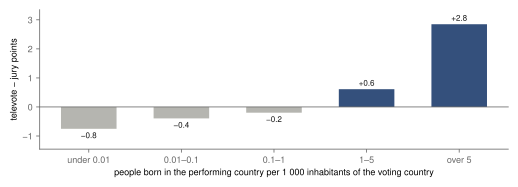
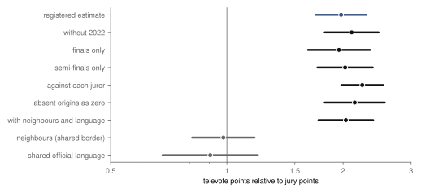
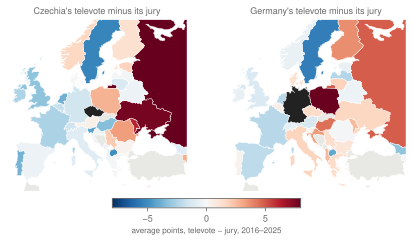
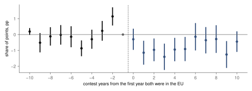

Research · pop music · Eurovision, 1975–2025
Diaspora, juries and the EU in Eurovision votes, 1975–2025
Where a performer's diaspora is large, the public's points relative to the jury's are about 1.98 times those where there is none (supported); pairs in the EU show no rise in mutual points (inconclusive).
- televote over jury, large diaspora against none
- ×1.98 at 5.4 migrants per 1 000 inhabitants · 95 % confidence interval 1.70 to 2.30 · supported
- neighbours, televote over jury
- ×0.98 95 % CI 0.81 to 1.18 · no clear difference · check, not registered
- both countries in the EU
- −0.91 pp percentage points of the share of points, years 0 to +5 after joining · 95 % CI −1.35 to −0.46 · inconclusive
- contests and countries
- 9 · 45 split jury and televote, 2016–2025 · voting countries
Overwhelmed? Here's the short version
- Since 2016 every country gives Eurovision points twice in the final (and, until 2022, in the semi-finals): once from five professional jurors and once from its public, for the same songs on the same night.
- Where many people from the performing country live, the public favours that song over the jury about twice as much as where none do. Where almost nobody does, the public gives less than the jury.
- Neighbours and countries sharing a language favour each other too, and we found no clear difference between how the public and the jury do so, though that check is imprecise. Of the things tested, diaspora is the one on which the public's and the jury's points clearly differ.
- After two countries were both in the EU, the share of points they gave each other was 0.91 percentage points lower than the comparison pairs' trend: inconclusive under the registered rule, the contests before joining were not flat, and most of the difference comes from the 2004 enlargement. We found no sign of a rise.
- Based on a pre-specified analysis of 9 contests (2016–2025) and 45 countries, comparing each country's jury and public on the same song. It is an association: migrant numbers may partly stand for how familiar the wider public is with a country, not only for migrants voting.
Photo: Alina Vozna · CC BY-SA 4.0, toned

Every May, someone explains that Eurovision is political: the Nordics vote for each other, the Balkans vote for each other, Greece and Cyprus exchange twelves, and the song barely matters. Economists have checked. Ginsburgh and Noury found that most of the apparent bloc voting disappears once you account for language and culture: countries that share them also share taste1. Spierdijk and Vellekoop found that the bias in the votes follows geography and culture, and in part migration2. What those studies could not do well is separate two things that move together: cultural closeness, which makes people like the same songs, and diaspora, which gives a country a crowd of voters from somewhere else.
Since 2016, the contest has made that separation possible by accident. Each country now gives points twice: once from a jury of five music professionals and once from a public televote, for the same songs, performed the same night. A shared taste should show up in both. A diaspora, people who moved from one country to another and still feel for their old one, can only show up in the public vote: Poles in Ireland may call for Poland; the Irish jury has no such reason. So the difference between a country's televote and its jury, for the same song, measures what a public brings that a panel does not. This study measures how much of it differs with diaspora.
A second question came out of a joke: is Eurovision a stronger European project than the European Union? That cannot be measured. A narrower question can: once two countries are both in the EU, is the share of points they give each other higher than before, relative to pairs that were not both members? The study asks that of fifty years of votes.
Data
The votes come from three sources. Janne Spijkervet's dataset has every country-to-country vote from 1957 to 2023, with jury and televote points separated since 20163. The Mirovision data by Burgoyne, Spijkervet and Baker cover 2016 to 2022 and include each juror's ranking4; they agree with Spijkervet's points on every pair they share. The 2024 and 2025 contests were read from the detailed voting tables of their Wikipedia articles at fixed revisions5; the same parser, run on 2023, reproduces Spijkervet's 740 non-zero 2023 votes exactly. The "rest of the world" online vote, which belongs to no country, is left out.
Diaspora is measured from the United Nations' international migrant stock6: the number of people born in the performing country who live in the voting country, per 1 000 of its inhabitants (population from the World Bank7), for the nearest of 2015, 2020 and 2024. The UN does not list every origin for every destination: for some countries, such as the United Kingdom, small origins are pooled into "other". Pairs without a figure are dropped, as the design said, and the result is reported again with those pairs counted as zero. Ukrainian refugees come from the UNHCR8, and shared borders and official languages from the CEPII distance database9.
The raw numbers already point one way (fig. 1). Where the performer's diaspora is tiny, under 0.01 per 1 000, the public gives it fewer points than the jury: 1.45 against 2.20 on average, a difference of −0.75. As the diaspora grows, the gap closes and turns. Where it is over five per 1 000, the public gives 5.98 points and the jury 3.13, a difference of +2.85. The jury's average rises a little with diaspora, from 2.20 to 3.13 points; the public's rises 4.1-fold.
Descriptive: where a performer's diaspora is largest, the public gives it 2.85 points more than the jury; where it is tiny, 0.75 fewer.

Among the pairs with the largest gaps, Ireland's televote gave Poland 9.9 points on average and its jury 0.0. Poland, Lithuania, Romania, Albania and Serbia receive more public than jury points in countries with large communities born there: Ireland, the United Kingdom, Germany, Italy, Switzerland, Slovenia. At the other end, juries sometimes reward what the public ignores: from Greece to Azerbaijan, the televote gave 0.6 points on average and the jury 7.0.
| voting country | performer | diaspora per 1 000 | televote | jury | rounds |
|---|---|---|---|---|---|
| Ireland | Poland | 22.1 | 9.9 | 0.0 | 7 |
| Ireland | Lithuania | 6.8 | 10.8 | 1.1 | 12 |
| Italy | Romania | 15.9 | 10.0 | 0.4 | 5 |
| Latvia | Russia | 62.9 | 11.6 | 3.0 | 5 |
| Switzerland | Serbia | 7.7 | 9.7 | 1.3 | 10 |
| Slovenia | Serbia | 22.4 | 10.5 | 2.4 | 10 |
| Finland | Estonia | 8.8 | 9.5 | 1.4 | 11 |
| the United Kingdom | Lithuania | 2.6 | 10.5 | 2.6 | 10 |
How this was done
The design, the hypotheses and the rule for reading each result were committed at f304d8c on 3 October 2026, before the results commit 70f75a9; the author has worked with these sources continuously since April 2025, in work that led to this study, so the design was written with knowledge of the sources, not blind to them. The power was simulated from the contest's structure alone. The registration is self-timestamped: commit times are recorded by the author's machine, the branch was pushed after the analysis, and on main design and results share one squash commit, so the order of steps is not independently timestamped. Three changes came after the first estimates were printed: a filter that drops rows the two-stage estimator cannot use, the registered finals-only and without-2004 checks, which were missing from the first code, and the exploratory Brexit comparison. All changes are dated in the change log.
The model for diaspora compares the two audiences of the same voting country for the same song. Each row is a voting country, a performer, a contest round and an audience, with the points given (zero for most). A Poisson regression, estimated by pseudo-maximum likelihood, which handles counts with many zeros10, includes three sets of fixed effects: separate baselines, so that only differences within each one count. One for every voting country, round and audience absorbs how generous each audience is. One for every performer, round and audience absorbs how much each audience liked each song. One for every pair of countries in every round absorbs everything about the pair in that contest that both audiences share: neighbours, language, history, a song sung in the voter's language. What remains is how the televote's points to a performer differ from the jury's, and the estimate is how that difference grows with the diaspora. Standard errors are clustered by pair of countries, which allows the votes within a pair to be correlated.
The rule was set in advance. Let the ratio be the televote's points relative to the jury's for a pair at the 90th percentile of diaspora, 5.4 per 1 000, against the same ratio for a pair with none: a ratio of two ratios, saying how much more the public favours a performer over the jury where its diaspora is large. The hypothesis is "supported" if the ratio's 95 % confidence interval (the range the true value plausibly lies in) lies wholly above 1, "not supported" if the ratio's interval lies within 0.90 to 1.10, and "inconclusive" otherwise.
Where diaspora is large
At 5.4 migrants per 1 000 inhabitants, the public's points to a performer, relative to the jury's, are 1.98 times what they are for a performer with no diaspora in the voting country (95 % CI 1.70 to 2.30). The interval lies far above 1, so the hypothesis is supported. The estimate rests on 11 316 rows, one per audience, from the 5 658 pair-rounds in which either audience gave a point. It is an association: the migrant count may also stand for how familiar the wider public is with the performing country, through media, travel or minorities not born there.
The ratio stays between 1.95 and 2.24 in every check below, the registered ones and the one added at the data step (fig. 2). Without 2022, the year almost every public voted for Ukraine, the ratio is 2.10. In finals only it is 1.95, in semi-finals only 2.02. Compared with each of the five jurors separately rather than with the jury's combined points (2016–2022, the years with juror rankings, converted to points), it is 2.24. Counting the pairs the UN does not list as zero migrants, it is 2.14.
A further check, not itself a registered hypothesis, adds shared borders and shared official languages, each allowed to matter differently for the public and the jury. The diaspora ratio stays at 2.03. Neighbours' public votes are 0.98 times their juries' (95 % CI 0.81 to 1.18), and a shared language's 0.91 (0.68 to 1.20): no clear difference, though both intervals allow differences of up to about 20 %. Neighbours and countries that share a language do favour each other, which earlier studies found1, and which the pair-level effects here absorb, but we find no sign that the public favours them more than the jury does. That is consistent with shared taste, which would reach professionals as well as viewers; this study does not test it. Pairs missing from the CEPII file, among them Montenegro's, were counted as neither neighbours nor sharing a language, rather than left out as the design note said. Diaspora, by contrast, is associated with a clear gap between the public's and the jury's points.
Where a performer's diaspora is large, the public gives about twice the jury's points, ×1.98 (1.70–2.30), and every check stays near 2; neighbours and a shared language show no clear difference.

Seen from two countries (fig. 3), the pattern is concrete. Czechia's public gave more than its jury above all to Russia (+8.2), Ukraine (+7.6), Moldova (+6.1) (average points, televote minus jury): countries with communities in Czechia, by far the largest of them Ukrainian. Germany's public did so for Poland (+7.9), Russia (+4.8), Hungary (+4.4). Where a diaspora is small, the public often gives less than the jury. One conjecture, not tested here, is that juries spread their points by craft while publics concentrate theirs on fewer songs.

Ukraine
The registered second test asked whether, from 2022, countries hosting more Ukrainian refugees per inhabitant gave Ukraine more public points relative to their juries than before. The estimate is +0.08 televote-minus-jury points to Ukraine for each unit of log(1 + Ukrainian refugees per 1 000 inhabitants at the end of 2022) (95 % CI −1.06 to 1.22), across 42 voting countries. The registered rule needed the interval to lie within ±0.5 points to call it a null, so it is inconclusive. One possible reason, not tested here: in the 2022 final, 28 of the 38 publics in these data gave Ukraine 12 points, leaving little room for differences between countries. With only 42 voting countries, the interval is also simply wide.
Points between EU members, before and after joining
The third test follows pairs of countries through fifty years of contests and asks what happens to the share of points they give each other once both are in the European Union12. Countries joined at different times, in 1981, 1986, 1995, 2004, 2007 and 2013, so pairs that became joint members can be compared with pairs that were not yet, or never, both members. The estimator is Gardner's two-stage difference in differences13, which compares the change in joining pairs with the change in pairs not joining at the time and is built for countries joining at different times, as implemented in pyfixest14. The outcome is the share of a voter's points that went to the other country, so the change in 2016 from one set of points to two does not matter. 470 directed pairs (voter to performer) became joint members with at least three contests observed before; 177 had too few and were dropped.
The comparison identifies an effect of joint membership only if, without accession, joining pairs' mutual shares would have moved like those of the comparison pairs, and if nothing changed in anticipation. The check of that assumption fails. After both were in the EU, the share of points they gave each other in the first six contests was 0.91 percentage points lower than the comparison pairs' trend (95 % CI −1.35 to −0.46), against an average of 4.5 % before: about −20 %. The registered rule expected a rise or nothing, so a fall is labelled inconclusive; we found no sign of a rise. It should not be read as "the EU makes Europeans like each other less". The contests before accession are not flat (fig. 4, an event study, which estimates each contest year separately against the last contest before joining): two contests before, pairs gave each other +1.14 percentage points more than expected (95 % CI 0.60 to 1.69), and five before, −0.87 (−1.34 to −0.40). Both are about as large as the fall itself, and 3 of the 9 pre-accession estimates have intervals that exclude zero, so the comparison pairs do not track joining pairs well and the estimate cannot be read as an effect of membership. Much of the fall, about 65 %, goes when the 2004 cohort, the countries that joined that year, is left out; that enlargement coincided with the introduction of semi-finals and with the arrival of new countries from the east that never joined the EU. Without it, the estimate is −0.32 percentage points (−0.82 to 0.18): no longer clearly negative, but still inconclusive under the registered rule, whose margin is ±0.45 points. That check and the one for finals only are registered checks, missing from the first code and added after the first estimates were seen; they use a stricter filter for usable rows than the main estimate. In finals only it is −0.90.
Brexit was the reverse case, and it is exploratory: the United Kingdom's mutual share with EU countries, 2021–2025 against 2016–2019, relative to its pairs outside the EU, changed by 0.66 percentage points (−0.59 to 1.90). The interval is wide: this comparison cannot tell whether leaving cost or gained anything.
Inconclusive: once both were in the EU, pairs' mutual share of points was 0.91 percentage points below the comparison pairs' trend, but the contests before joining were not flat either.

What this means
Measured: of what we tested, the gap between a public's and a jury's points differs most clearly with the size of the performer's diaspora. Where it is large, the televote favours the performer over the jury about 1.98 times as much as where there is none (95 % CI 1.70 to 2.30); where it is tiny, the televote gives less than the jury. That is an association: migrant numbers may also stand for tourism, media reach or communities not born abroad. Neighbours and shared languages show no clear public–jury difference, with intervals that allow about 20 % either way.
After two countries were both in the EU, the share of points they gave each other was 0.91 percentage points lower than the comparison pairs' trend (−1.35 to −0.46), inconclusive, with pre-accession contests that are not flat and most of the difference in the 2004 enlargement. We found no sign of a rise, and the design cannot say what membership itself did. Whether Eurovision is a stronger European project than the EU is not something these votes can measure.
What this does not show
Points are not friendship. They are a public's and a jury's taste for one song on one night, and a country that sends a weak song loses points from friends too. The diaspora estimate cannot say whether migrants themselves cast the extra votes, or why they would: identity, organisation, or simply that a community that cares calls more than once. It uses migrants by birthplace, so second generations and refugees not yet counted as migrants are missing, and the migrant count may also stand for tourism and media ties between the two countries. 8 944 of the 26 316 rows (34 %), about a third, have no UN figure and were dropped; counting them as zero gives the same answer, but the true figures could differ. The EU test bundles accession with everything that came with it, including the semi-finals and the new eastern entrants of 2004, and the years before accession are not flat, so it does not identify an effect of membership in either direction. And all of this is televotes and juries from 2016 on: the decades before, when each country published a single set of points, are seen only in the EU test.
Reproduction
Every number on this page is filled in from assets/eurovision/results.json and the published tables by a script. From the repository root:
tools/eurovision/collect.py: every source and its hash.prepare.py: the three tables and the validation.estimate.py: the registered estimates and checks.article.py: the figures, the table and this page.
The design is docs/research/eurovision-design.md; the power simulations are power.py and power_h3.py. Related: Pop, measured.
References
- Ginsburgh, V., Noury, A. G. (2008). The Eurovision Song Contest. Is voting political or cultural? European Journal of Political Economy 24(1), 41–52. doi:10.1016/j.ejpoleco.2007.05.004. Accessed 3 October 2026.
- Spierdijk, L., Vellekoop, M. (2009). The structure of bias in peer voting systems: lessons from the Eurovision Song Contest. Empirical Economics 36(2), 403–425. doi:10.1007/s00181-008-0202-5. Accessed 3 October 2026.
- Spijkervet, J. (2023). Spijkervet/eurovision-dataset: 2023 (release 2023). Zenodo. doi:10.5281/zenodo.10088892 (this release; concept DOI 10.5281/zenodo.4036456 for all versions); github.com/Spijkervet/eurovision-dataset. Accessed 3 October 2026; DOIs checked on DataCite 9 October 2026.
- Burgoyne, J. A., Spijkervet, J., Baker, D. J. (2023). Mirovision: data and code (MIT), commit d70e25d. github.com/Amsterdam-Music-Lab/mirovision. Accessed 3 October 2026.
- Wikipedia contributors. Eurovision Song Contest 2023 (revision 1375641667), 2024 (1378019076), 2025 (1378018909), CC BY-SA. en.wikipedia.org. Accessed 3 October 2026.
- United Nations, Department of Economic and Social Affairs, Population Division (2024). International Migrant Stock 2024, by destination and origin. un.org. Accessed 3 October 2026.
- World Bank. Population, total (SP.POP.TOTL), 2015–2024. data.worldbank.org. Accessed 3 October 2026.
- UNHCR. Refugee Data Finder: refugees from Ukraine by country of asylum, 2022 and 2024. unhcr.org/refugee-statistics. Accessed 3 October 2026.
- Mayer, T., Zignago, S. (2011). Notes on CEPII's distances measures: the GeoDist database. CEPII Working Paper 2011-25. cepii.fr. Accessed 3 October 2026.
- Santos Silva, J. M. C., Tenreyro, S. (2006). The log of gravity. The Review of Economics and Statistics 88(4), 641–658. doi:10.1162/rest.88.4.641. Accessed 3 October 2026.
- Natural Earth. Admin 0 – countries, 1:50m. Public domain. naturalearthdata.com. Accessed 3 October 2026.
- European Union. EU member countries and their dates of accession. european-union.europa.eu. Accessed 3 October 2026.
- Gardner, J. (2022). Two-stage differences in differences. arXiv:2207.05943. arxiv.org/abs/2207.05943. Accessed 3 October 2026.
- Fischer, A., and contributors. pyfixest: fast high-dimensional fixed-effects regression in Python, version 0.60.0. github.com/py-econometrics/pyfixest. Accessed 3 October 2026.